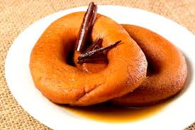

La gastronomía de Juticalpa, cabecera del departamento de Olancho, es un fiel reflejo de la riqueza cultural y natural de la región. Reconocida como el "granero de Honduras", Olancho proporciona una abundancia de ingredientes frescos y autóctonos que forman la base de su cocina tradicional. En Juticalpa, los sabores se entrelazan con la historia, fusionando técnicas culinarias ancestrales con la creatividad de su gente.
Platos Típicos
Baleadas
Montucas
Sopa de Mondongo
Carne Asada con Chimol
Postres y Dulces
Rosquillas
Dulce de Leche
Ayote en Miel
Empanadas de Leche
Bebidas Típicas
Café